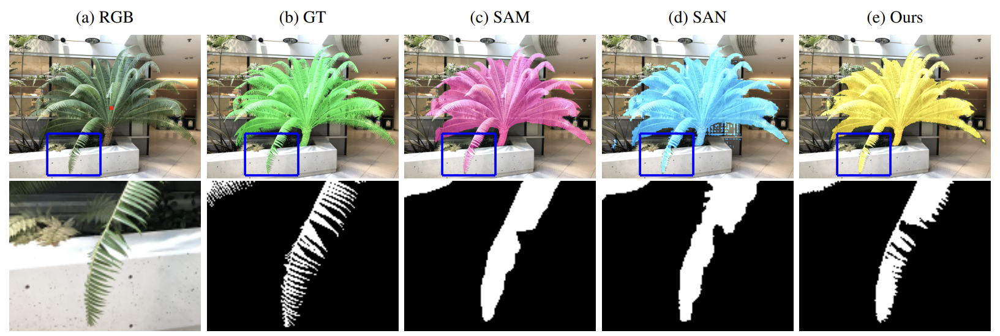
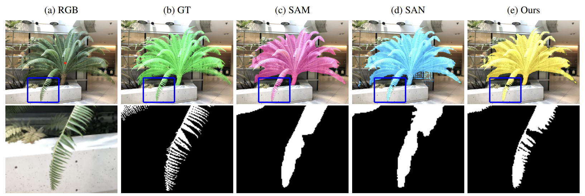
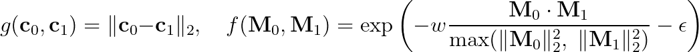
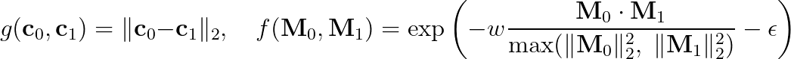

Abstract
Recently, the Segment Anything Model (SAM) has showcased remarkable capabilities of zero-shot segmentation, while NeRF (Neural Radiance Fields) has gained popularity as a method for various 3D problems beyond novel view synthesis. Though there exist initial attempts to incorporate these two methods into 3D segmentation, they face the challenge of accurately and consistently segmenting objects in complex scenarios. In this paper, we introduce the Segment Anything for NeRF in High Quality (SANeRF-HQ) to achieve high quality 3D segmentation of any object in a given scene. SANeRF-HQ utilizes SAM for open-world object segmentation guided by user-supplied prompts, while leveraging NeRF to aggregate information from different viewpoints. To overcome the aforementioned challenges, we employ density field and RGB similarity to enhance the accuracy of segmentation boundary during the aggregation. Emphasizing on segmentation accuracy, we evaluate our method quantitatively on multiple NeRF datasets where high-quality ground-truths are available or manually annotated. SANeRF-HQ shows a significant quality improvement over previous state-of-the-art methods in NeRF object segmentation, provides higher flexibility for object localization, and enables more consistent object segmentation across multiple views.
Video
Mask Aggregation
 

Ray-Pair RGB Loss
 

Additional Comparison
Other Prompts
Our method also support text prompts using Grounding-DINO, and automatically segmenting everything in the scene using a grid of point prompts:Dynamic NeRF
Citation
Acknowledgements
The website template was borrowed from Michaël Gharbi and Ref-NeRF